来源：https://w3pw88qoub.feishu.cn/docx/Ku4pdrB75o4aW7xxcxoc8Hi6n1d
（已删除全部一切个人信息，链接、二维码，全部打码不可用了 ）
1、推广者类型、简介
2、推广、拉新方式
3、变现方式
基础流程：
1、找资源（超5PB全网资源永久链接： ，各大网盘推广博主的分享合集、各大资源论坛的最新网址，资源可以从这里找，一般没人愿意分享别人的资源合集，因为用户存了其他人的资源，会抢了自己的拉新和转存收益，所以汇总各个推广博主资源的合集，应该是从没有人分享过）
2、发资源（本篇文章要讲的内容）
3、赚收益（第2步做好，收益自然来了！）
1、社群分享：
寻找各类微信群、QQ群、tg，投其所好，读书群发海量图书资源，追剧群，发4K热门影视剧资源；明星粉丝群，发明星的写真、照片、作品合集；
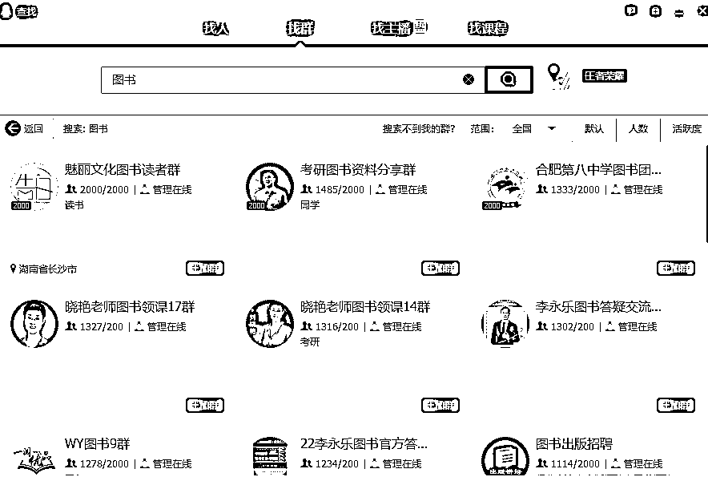
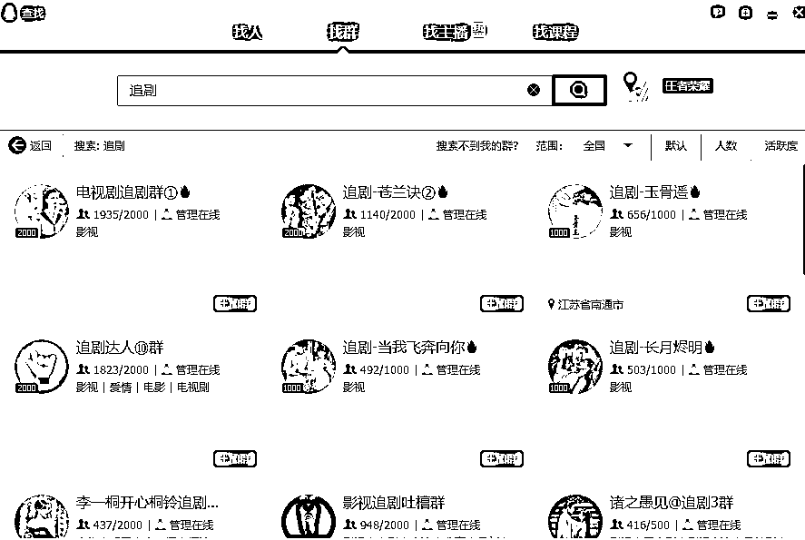
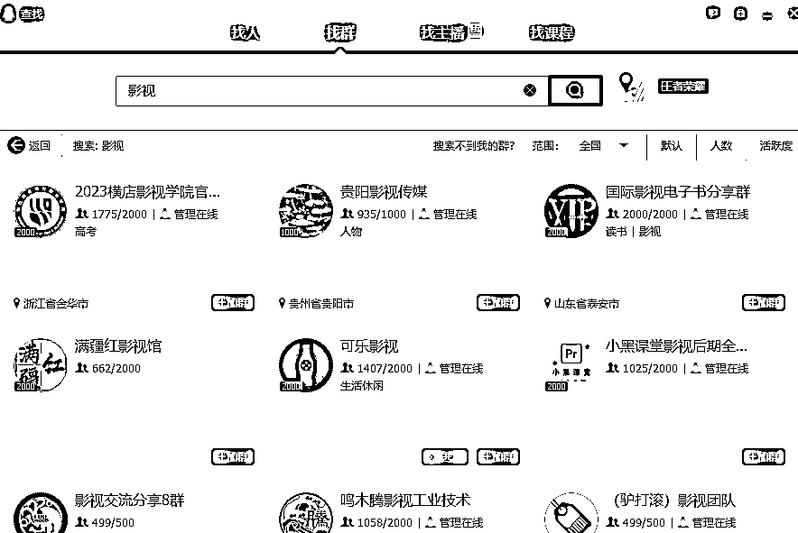
宝妈群，发胎教课程、育儿课程资源、幼儿动画片、童话绘本等；
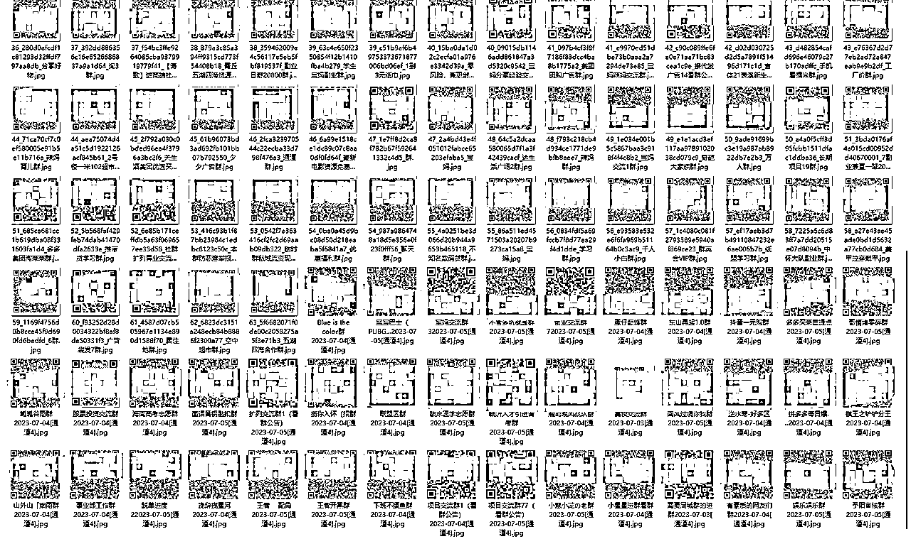
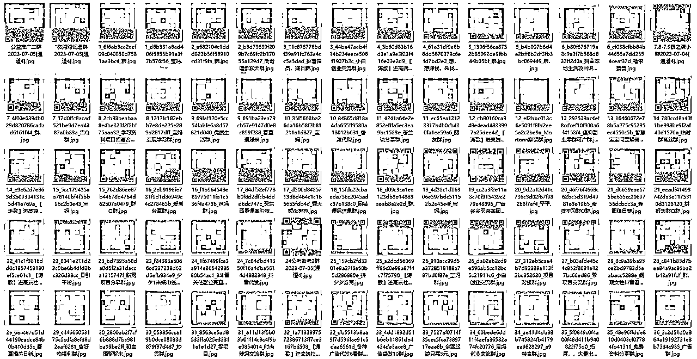
网盘资源广泛，这些资源一搜就有，转发到对应圈子里就行；
（QQ群是可以搜名称加群的。微信群，有些方法可以大量加到群的，注意不要同时加太多，用多个微信号什么的，这些得自己准备的。）
2、论坛、网站、贴吧、B站、知乎、微博、葫芦侠、酷安等平台分享。
在热门论坛、网站，发布相关度极高的资源分享贴；
B站等自媒体平台，分享相关视频，简介区、评论区，发布更多相关资源的分享链接；
甚至在热门帖子、热门评论下面，也可以发布相关度极高的分享链接，如果方法得当，很多时候人们会非常欢迎你的无偿免费分享，如果链接失效，网友会贴心提示你链接没了，让你更新链接；
3、自己建号做博主！
生财的航海实操，都是教起号的，做起自媒体账号，有了流量，就可以通过网盘推广，把流量变现；
比如：参加近期火爆的“天涯神贴”项目；
发布天涯神贴相关视频、文章，引流到私域，或者在平台放置：夸克中文口令码，不需要链接，只要一行中文口令，引导用户复制到夸克APP，也可以完成转存、拉新。
其他类型的资源，思路也是一样的，尽量引流到私域，然后发资源的网盘链接。
重点：这一部分，个体达人这部分，是最看功夫的，只要用心做，每天几百收益没问题。一定要根据渠道选择资源类型，同时要分析渠道，分析渠道的数据效果，调整分享方式、资源类型，调整分享渠道，怎么样做数据高，然后重复做，不断提高数据，这个是要自己多实际，多总结经验的，最看个人功力！
虽然只有几句话，但是思路讲了，关键要自己实践，提炼流程，每个人领域不同，不会一模一样，要自己按思路提炼自己的流程，不断优化。
在全网发布的链接，其中每一个文件夹中，都放置：
1、防失联、引流信息，比如一个文档，名称：必看！3000TB免费精品资源，关注公众号：XXX
2、加了公众号，关注的消息里，可以放置网盘链接，也可以放置加群二维码，引流到群里，社群怎么变现，生财里有很多讲的
3、一个Word文档，里面写文案，说明你资源又好，又免费，通过中转站防止被举报失效，中转站后，是一个可以实时更新的在线文档。这样，用户只要点开你的一个资源，就可以看到你全部的1000+条资源链接；
拉新、返佣、转存都是现金收益，只要分享即可变现，不用多讲。
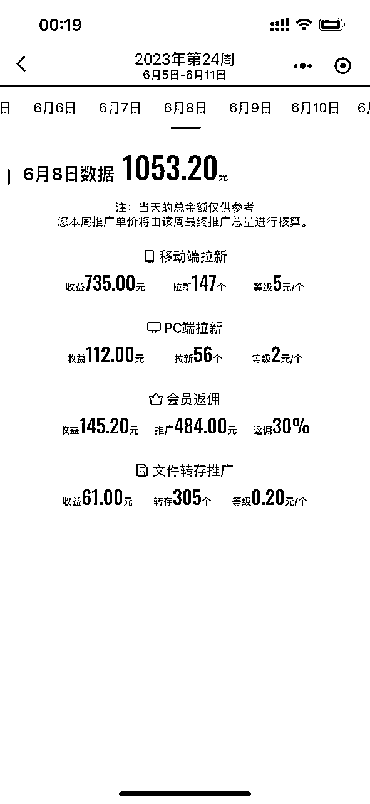
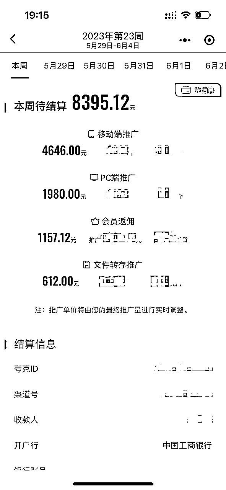
（阿里云盘返佣是现金，拉新需要经销会员变现）
1、会员销售商城二维码，用户扫码即可购买低价会员；也可以加入引导：下单即送：XXXX，添加微信xxx，引导入私域，之后他每年续费都可以成为你的付费客户。
2、在闲鱼、转转等个人电商平台，上架阿里云盘会员进行销售；在抖音、小红书、B站等自媒体平台，发布阿里云盘相关视频、资源引子，引导入私域，进行会员销售；
3、建议对充过会员的人，拉一个微信群，建立私域，以后他和他朋友充值会员，你提供独家价格优惠，每年都可以找你续费。
4、找次级经销商，按批发价低价大量批发出去，你供货，让他赚差价，你赚成本价，利用别人的时间，替你做销售。（主要销售价格，必须符合官方规定的指导价！）
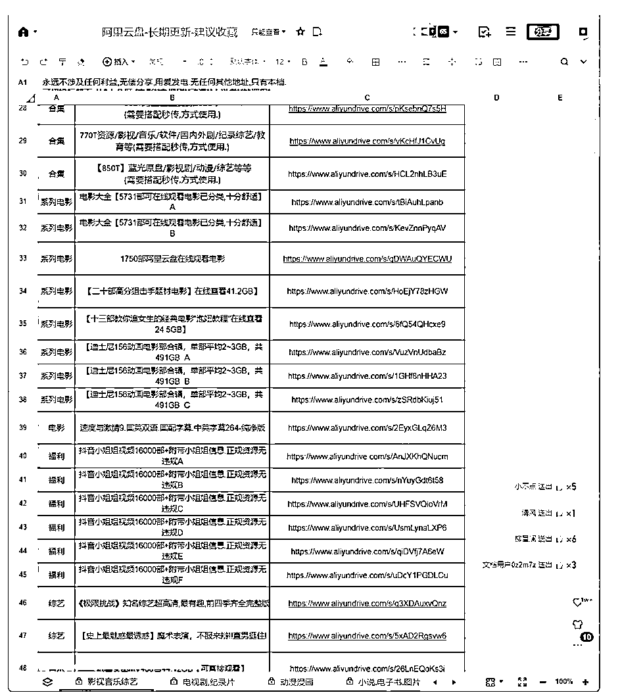
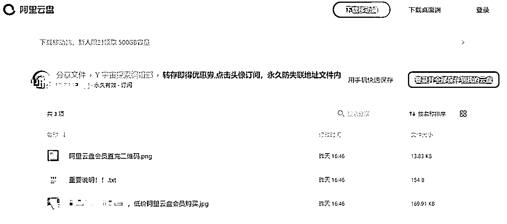
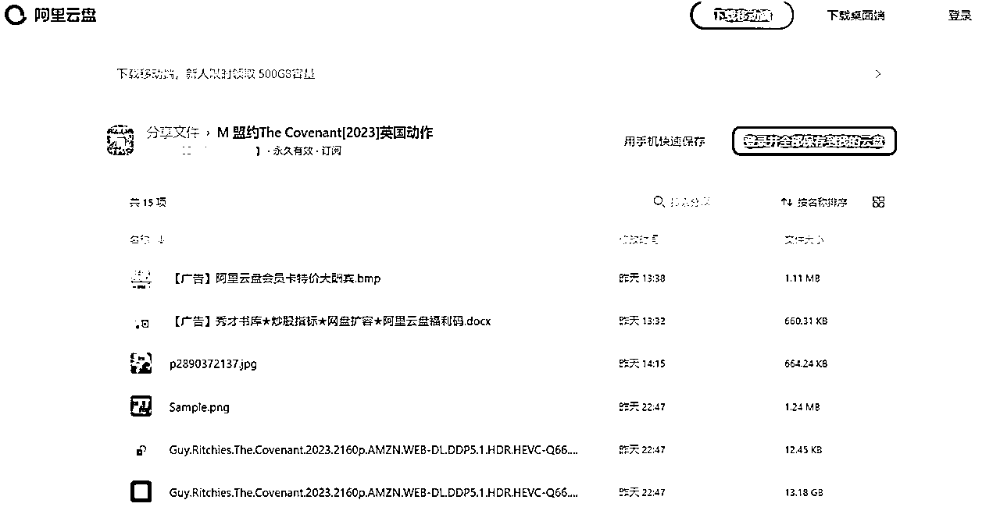
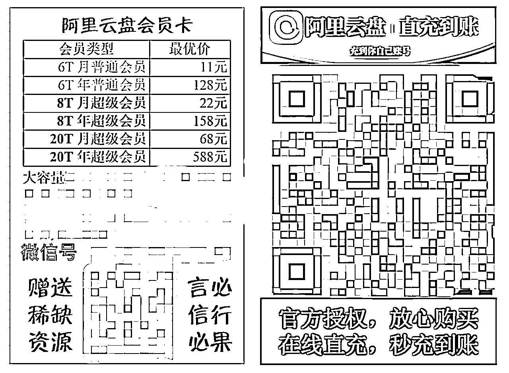
只要建立这个闭环，坚持分享和更新，用户会一直保存着你这个资源渠道，同时会自主分享给其他人，让你的资源信息，在社群、网络中自动传播；
（有工具可以批量建立分享，一键批量复制广告文件到全盘所有文件夹中）
公众号：软件小妹、刺客边风
公众号发文、菜单栏，放置分类资源库入口，通过阿里云盘、夸克网盘分享资源
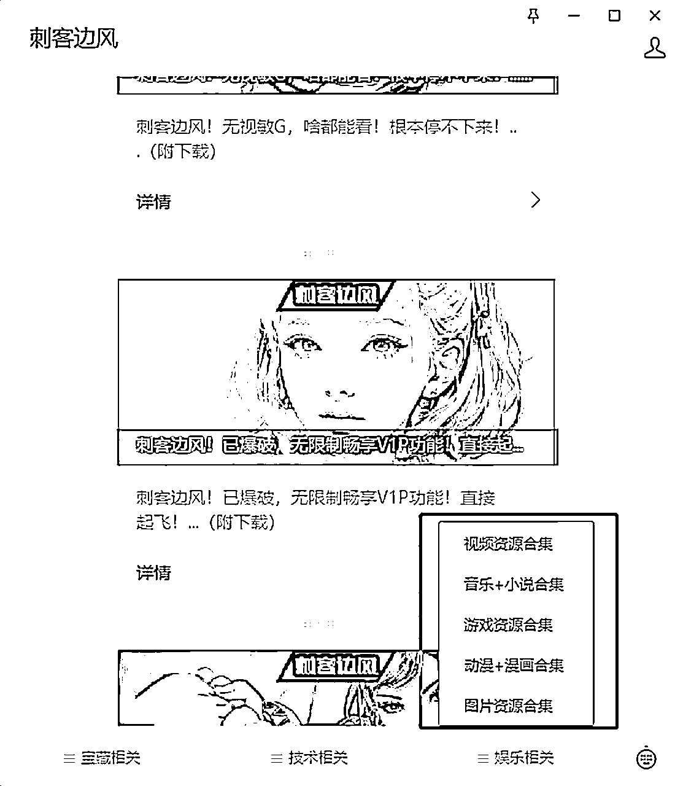
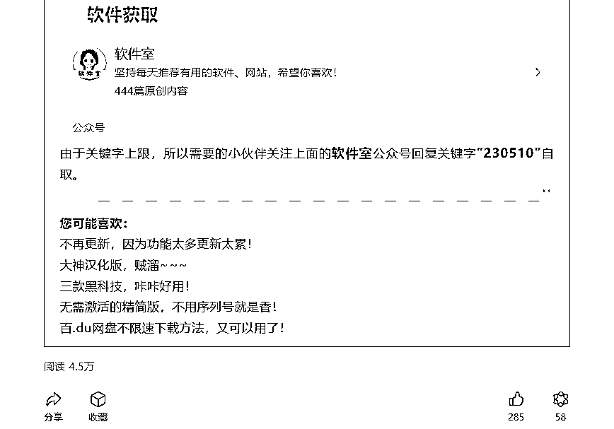
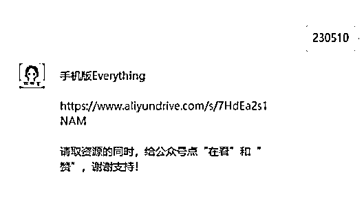
短视频平台、小红书平台，为了避免违规，可以先引流到私域，然后发资源，如何引流私域，这属于另一个科目的技能了，之后有机会再讲。
1、公众号文章中，放置引导用户购买会员的文案，商城二维码，扫码下单
如：https://mp.weixin.qq.com/s/9ddpAj07EyGlIoXkTzY7vg
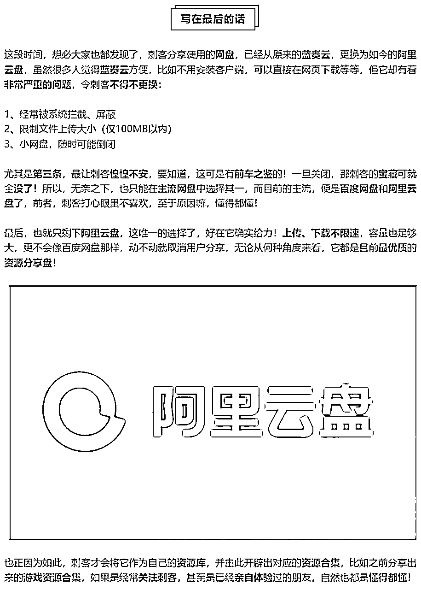
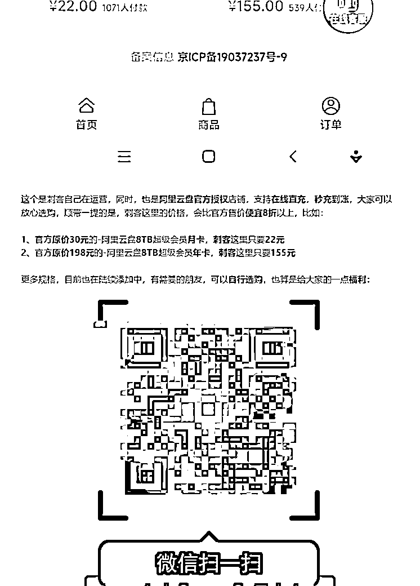
2、引流到粉丝群，私域变现，之后续费年年找你，而且618这些活动期间，可以搞优惠活动，黏住用户长期停留
自身有很好流量基础的网站，推广和变现相对容易。
1、可以在首页放置精选优质的资源包合集，或者放置资源包入口，点击进去查看更多各类型资源。
2、日常分享发帖时，进行分享。
1、在首页放置阿里云盘店铺二维码，引导使用微信扫码购买；
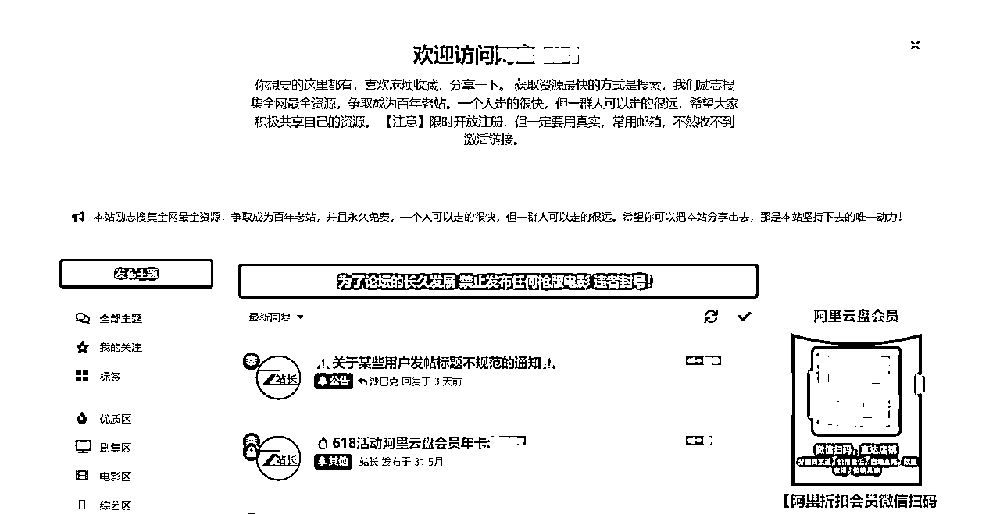
2、自己可以做一些后台关联，从商城后台获取哪些手机号在你的店铺充值了，然后把这些手机号用户，定期更新到你网站、APP客户端的VIP库中，用户付费后，就可以在本站可以获得更大权益，也就是把阿里云盘会员和你自身网站的会员权益关联，在你阿里云盘店铺充值年卡的客户，同步可以升级享受你网站的更高特权。
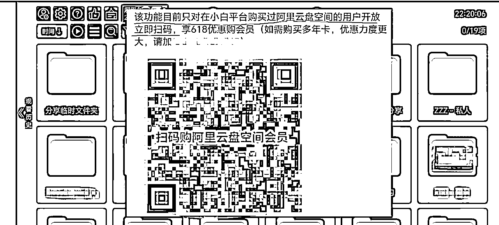
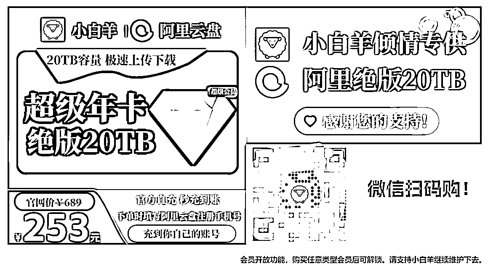
如有流量大的资源网站、软件站点，有独家合作项目
我自己感觉说的内容还是很少，还有很多东西，篇幅有限还是讲不完，后续从其他角度专门来说，其实有时候数据爆发，其实就是上面讲的某一个方法，或者某一个资源，在某一个渠道，突然爆发，资源火爆，同时人们互相传播，数据就爆炸增长了，这个有运气成分，但是先得你把自己在这些渠道发上去，才有可能撞到这种运气。
还有选资源、选渠道，包装资源是很重要的，比如一些视频解说，为什么解说老片还能火，就需要对老片进行包装的。
发资源也是，思考怎么包装，改标题，打话题，资源是固定的，找其中吸引人的点，把它推销出去，让更多人想去保存，发在热门话题位置，可以和当前热门话题打上关联，和热门梗打上关联，等等，其实也就是思考怎么引起人的注意力。
也要善用工具，批量重命名、批量复制文件（复制广告文件到所有文件夹）、批量复制管理链接，批量新建分享，视频洗码等等工具，也是需要实践，提高自己效率的。
后续更新内容：
网盘挂载本地教学，批量化重命名、批量化复制宣传文件
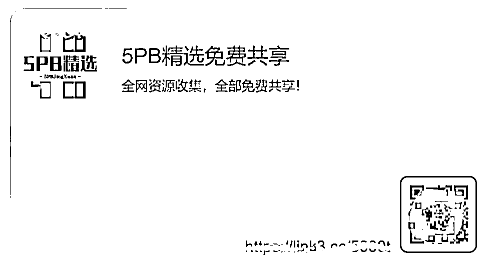
汇总了全网超5PB资源，各大推广博主的分享合集、各大资源论坛的最新网址，可以解决您绝大多数的资源问题。